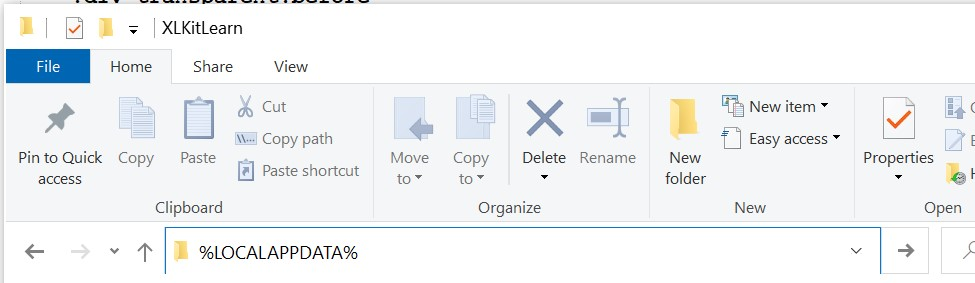

Installing on Windows Without the .exe File
Some students will not be able to install XLKitLearn using the .exe file. This is likely to be true if you have a corporate computer. If this is you, the installation instructions below might work for you.
If the instructions below don't work for you, you migth be out of luck. But all is not lost - if you're at Columbia Business School, you can still hopefully take the class using one of the following strategies:
- Use one of the computers around CBS, on which you will be able to install the add-in.
- Get a loaner PC from ITG for the duration of the course, if they have one available - email to ask them.
- Use a friend's computer, or an old computer, for the homeworks. You will not need the add-in for the final exam.
Here are the alternative installation instructions; feel free to email us if you encounter any issues.
- Go to any explorer window, and type
%LOCALAPPDATA%into the address bar; press enter. For most people, this will take you to theC:\Users\USERNAME\AppData\Localfolder, whereUSERNAMEis your username, but if it takes you elsewhere, that's fine! - Inside this folder, create a NEW folder called
XLKitLearn. For most people, this will mean you now have a folder calledC:\Users\USERNAME\AppData\Local\XLKitLearn. - Download this zip file. [Note: if you have a very old computer and you encounter issues, check out this page, and if you determine you have a 32-bit computer, download this alternative zip file].
- Unzip this zip file directly into the folder you created in step 2. This might take a while.
- Download this xltm file. You should put this somewhere safe like your desktop - every time you want to run the add-in, you'll need to double click on this Excel template file.
- You're done! Go back to the second part of the Windows installation instructions on the main install page. Instead of finding "XLKitLearn" in the start menu when you want to run the add-in, you'll be opening the
xltmfile you downloaded in the previous step.